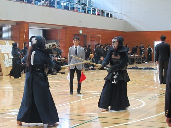
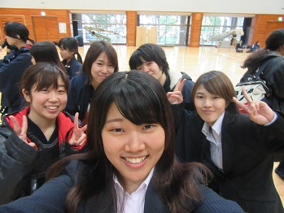
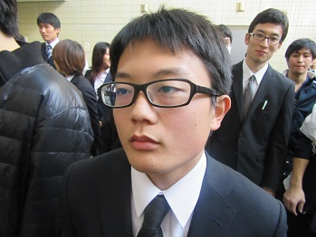

|
11月26日に行われました関東親善大会についてお伝えします。 現幹部である５３期の引退試合となりましたこの試合では、男女ともに 入賞まであと一歩というところで敗退となりました。しかしながら、幹部が任期の あいだに追い求めてきた「チーム力」の光る試合が展開されました。まさに 最後の試合にふさわしい充実した試合内容となりました。 三上（５５）おはよう。 主務への敬意をこめてメガネをカブせてきた青木（５４） 
森（５５）はまだ眠そうだね。 甘系男子・八塚（５５）はチョコパンを持参していました。 さわやかきはら（５３） 家が遠いので昨日は後輩の家に泊めてもらった中山（５３・左）。 隣はその宿泊先・ホテル伊藤のオーナー（伊藤・５４）。 その目は何が言いたいんだぁ？あぁ？ 
さわやか（じゃない）おおはし（５３） 明らかにカメラを無視している篠崎（５３）。反抗期か。 そろそろ集まってきたんだけどまだいない人が… いなかった人その①・児玉（５３）。ゆーて間に合ってるし。 「ボクらの時代」みたいになっている３人。 そして遅刻者は…この人。 ニヤニヤ走んなや山﨑（５３） 電車の遅延ですって。本当かしら。 しかし。遅れていったのに会場はまだ開いていなかった。万事OK。 そして…広報が…カメラを後輩に託した瞬間…こうなった…猫って… でも応援にたくさん来てくれて嬉しかったよ！ありがとう！ 開会式の後はミーティング…なんですがエア剣道がスタート。 こいつです！！仕事しないカメラ担当！！このゴリラです！！ 試合は女子が最初にやりました。襷付け～。これはいい写真。 
サービスありがとうございます。 いざ出陣。 頑張れ！  安眠ウーマンの中山（５３）も最後の試合らしい素晴らしい気合。 さぁ！男子も頑張っ…寝ている森（５５）。しかも結構ぐっすり。 OBも応援に駆けつけてくださいました！ありがとうございます！ （無言） 係員・青木。頭よさそう。（たぶんいいけど） 男子も白熱した試合が展開されました！ 調子よかったピーポーその①・須合（５３） 調子よかったピーポーその②・前田（５４） 大橋は、とっても大橋らしかった（個人的感想） 
一年間ありがとうございました。 で、またここから自撮りコーナー。  いや、ふつうに撮るのうまいけどな？ あ…でもこれはいい写真だわ。 杉浦（５４）・池田（５４）もわざわざありがとう！ 加藤（５５）が４ポーズしていないのは粗相か。 ５３期の塊。俺もここに固まりたい。 先輩方も本当にありがとうございます。 試合中のヤジの源の二人。ガラが悪い。ダメ。 そして最後のミーティング。  今日は鳴りを潜めていた？持田（５５） 竹内（５５）とやっくん。愛想がよろし。 愛想悪い雰囲気を出しておいて、実は愛想のいい武田（５４・左）と伊藤。 後ろのバヤシコが面白いので載せておきますね。 １女’ｓ。かわいい。いや、かわいい。 そして集合写真。まずは女子！ こちらは男子！ 全体！一年間ありがとうございました！ ５３期は１２月３日の納会をもって引退となります。あと少しの間ですがどうぞ よろしくお願いします。 (※写真へのコメントは全て管理人がしております。) |